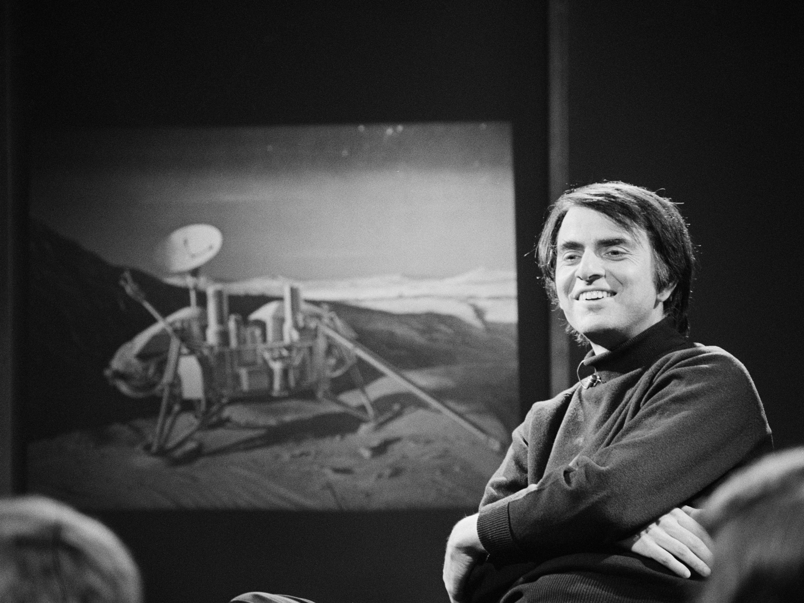

Dr. Carl Sagan

Carl Edward Sagan was an American astronomer, cosmologist, astrophysicist, astrobiologist, author, science popularizer, and science communicator in astronomy and other natural sciences.
- In 1960, Carl Edward Sagan began his career as a Miller Fellow at the University of California, Barkley. There, he helped a team of astrophysicists to develop an infrared radiometer for NASA’s Mariner 2 robotic probe.
- In 1962, Sagan joined Smithsonian Astrophysical Observatory, an affiliated institute of Harvard University, as an assistant professor. Concurrently, he was a visiting scientist to NASA’s Jet Propulsion Laboratory.
- In the latter capacity, he contributed significantly to the first Mariner missions to Venus, working both on its design and management. Working with Joshua Lederberg, Sagan also helped to expand the role of biology in NASA.
- During this period, he mainly worked on the physical conditions of different planets, especially Mars and Venus. He established that the radio emissions from Venus were the result of very hot surface temperature caused by the sun’s heat, trapped between the surface of the planet and its carbon dioxide cloud-cover.
- His theory refuted earlier notion that the atmosphere of Venus was more like earth’s atmosphere. Although many scientists were skeptic, it was confirmed first by NASA’s Mariner 2 and later by the Soviet scientists.
- Sagan had also studied various data available on Mars. From that, he concluded that the bright regions observed on the surface of Mars were actually lowlands filled with wind-blown sand while the dark areas were elevated ridges or highlands.
- During this period, he also became interested in life beyond the earth and experimentally demonstrated that amino acids could be produced from basic chemicals through radiation. From it, he concluded that existence of extraterrestrial beings was not at all farfetched.
- In 1968, on being refused academic tenure at Harvard, Sagan joined Cornell University (Ithaca, New York) as an associate professor. In 1970, he became a full professor and also the Director of the Laboratory for Planetary Studies at the University.
- In 1971, together with Frank Drake, Sagan co-designed the first physical message aimed at extraterrestrial intelligence. Known as Pioneer plaques, these were attached to Pioneer 10 and Pioneer 11 spacecrafts in the hope that extraterrestrial beings might find them one day.
- In 1972, Sagan became the Associate Director of the Center for Radiophysics and Space Research (CRSR) at Cornell and held the post till 1981. Concurrently, he continued working as a consultant to NASA and in 1975, helped select the Mars landing sites for the Viking probes.
- In 1976, he became the David Duncan Professor of Astronomy and Space Sciences, a position he held for the remainder of his life. Concurrently, he also continued his association with NASA and co-designed Voyager Golden Record.
- Thereafter, Sagan became involved with NASA’s next mission Galileo, initially christened Jupiter Orbiter Probe. Along with that, he continued his research on planetary atmospheres, in astrobiology, and on the origin of life.
- Sagan was also a prolific writer and had successfully used his pen to popularize astronomy. He had published more than 600 papers and authored/co-authored/edited around twenty books. ‘Jerome Agel, The Cosmic Connection: An Extraterrestrial Perspective’, published in 1973, was first to turn him into a popular science writer.
- His 1977 book, ‘The Dragons of Eden: Speculations on the Evolution of Human Intelligence’, was another of his popular works. In it, he had combined anthropology, evolutionary biology, psychology, and computer science to show how human intelligence might have evolved.